Ajalukku sukeldumiseks keri alla!
Ajalukku sukeldumiseks libista alla!
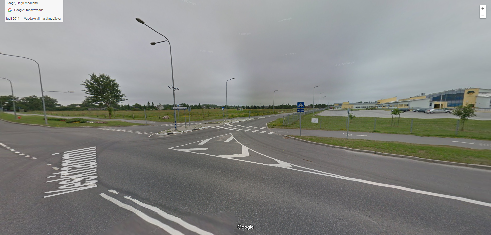 Vaade Saue riigigümnaasiumi kinnistule 2011. aastal
Foto: kuvatõmmis Google Street View
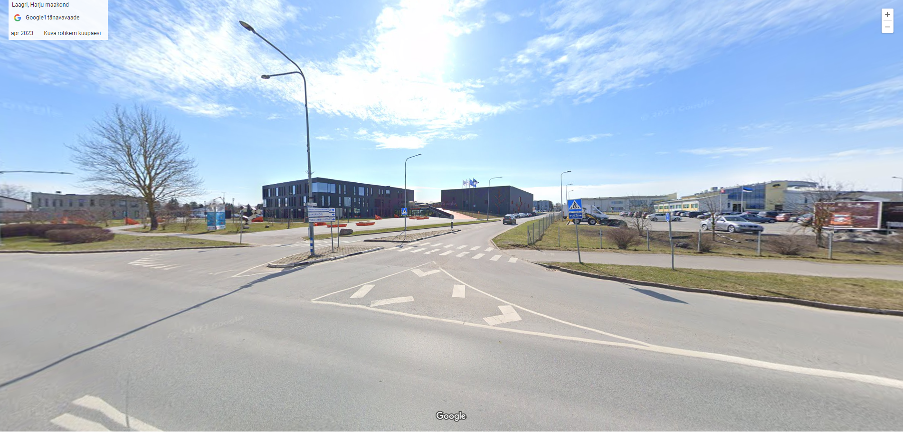 Vaade Saue Riigigümnaasiumi kinnistule 2023. aastal
Foto: kuvatõmmis Google Street View
Esimesed ideed ja läbirääkimised Saue valda riigigümnaasiumi rajamiseks kerkisid esile juba 2013. aastal, kuid midagi kindlat paika ei pandud.
2015. aastal tegi Geomeedia analüüsi, mille kohaselt leiti sobivaks riigigümnaasiumi rajamiseks Laagri alevik.
21. jaanuaril 2016 allkirjastati Haridusministeeriumi ja Saue valla vahel ühiste kavatsuste protokoll, millega pandi paika riigigümnaasiumi asukoht ja algne valmimise aasta, milleks oli 2019. Asukohaks kinnitati Laagri alevikus Laagri kooli kõrval asuv kinnistu.
2017. aastal toimus haldusreform ehk valdade ühinemine, millega liideti üheks Saue vallaks Nissi vald, Kernu vald, Saue vald ja Saue linn. Peale haldusreformi tekkis aga probleem, sest Saue linnas tegutses juba gümnaasium, Saue Gümnaasium. Teatavasti oli planeeritud valda riigigümnaasium, mis pidi olema ainuke gümnaasiumiastmega kool Saue vallas, sest riik ei soovinud, et samas omavalitsuses oleks lisaks riigigümnaasiumile ka munitsipaalkool.
Ühinenud valla uus volikogu andis vallavalitsusele 25. jaanuaril 2018 rohelise tule jätkata ministeeriumiga läbirääkimisi riigigümnaasiumi loomiseks. Selle jaoks tuli aga volikogul võtta vastu otsus Saue Gümnaasium muuta Saue Kooli nimeliseks ning see ümberkorraldada vaid põhikooliastet õpetavaks kooliks. Riigigümnaasiumi läbirääkimised said jätkuda. Nüüd tekkis Saue valda rajatava riigigümnaasiumi asukoha teemadel Saue vallavolikogus diskussioon. 2018. aasta veebruaris esitati Saue vallavolikogus eelnõu, mille kohaselt võiks riigigümnaasiumi rajada ka Saue linna. Märtsi lõpus toimunud volikogus see ettepanek heakskiitu ei saanud ning tulevase kooli asukoht jäi Laagrisse. Saue vallavanem Andres Laisk mainis 05.03 2018 ilmunud Harju Elu artiklis, et kui kõik osapooled annavad 2018. aasta kevade jooksul oma allkirjad, siis oleks uue kooli võimalik valmimisaeg 2021. aasta sügis. Veel ütles Saue vallavanem, et riigigümnaasiumi kohta oluliste otsuste tegemine ootas valdade ühinemise taga ning lisaks oli vaja uue volikogu otsust. Seetõttu lükkus algne plaan saada kool valmis 2019. aasta sügiseks, mitu aastat edasi.
"Geomedia uuringus, millega täna Harjumaale juba rajatavate ja ka kavandatud koolide asukohad paika pandi, leiti, et piirkondlike riigigümnaasiumite asukohad, mis võimaldavad vähemalt 540 õpilasega koole, peaksid olema Tabasalus, Laagris, Jüris ja Viimsis. Viimsi oma on täna juba töös ning Tabasalus asjad samuti liiguvad. Meie projektiga edasiliikumine ootas ühinemist ja uue volikogu seisukohta, mille viimane jaanuaris ka ühehäälselt andis" – Andres Laisk
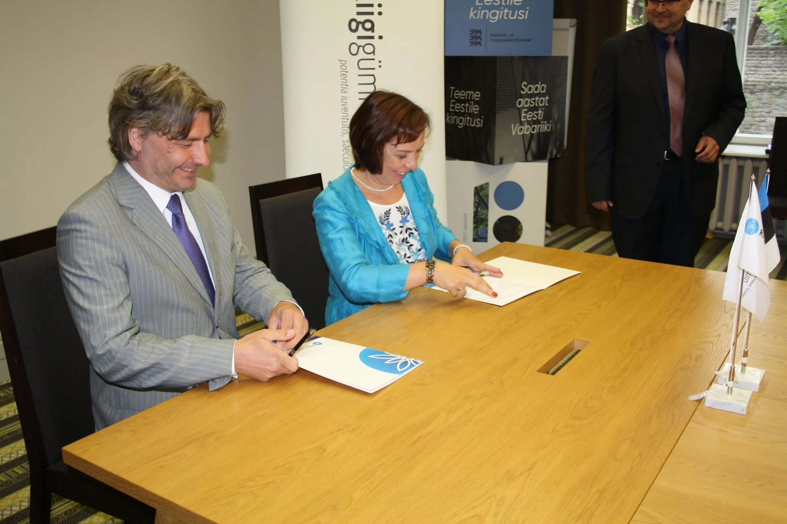 Saue valla ja Haridusministeeriumi koostöölepingu allkirjastamine 2018. aastal
Foto: Saue valla Facebooki postitus (Allikas)
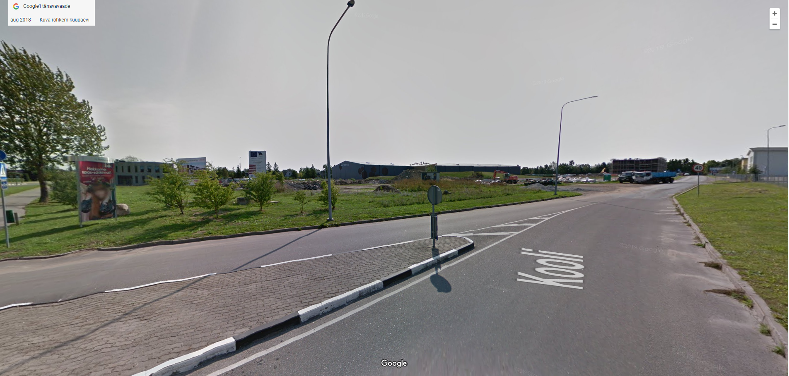 Vaade Kooli 1 kinnistule 2018. aasta augustikuus
Foto: kuvatõmmis Google Street View
2019. aasta suvel valmis Laagri Gümnaasiumi ja spordihoone eelprojekt, millega oli tegeletud juba 2017. aastast, kui toimus Laagri Gümnaasiumi arhitektuurivõistlus, mille võitsid Boa arhitektid. Võidutööks oli projekt „Kaks Kantsi", mille autorid on Anto Savi, Jürgen Lepper ja Maiu Uusmaa. Kooli sisearhitekt on Kerli Lepp Kuup Disainist.
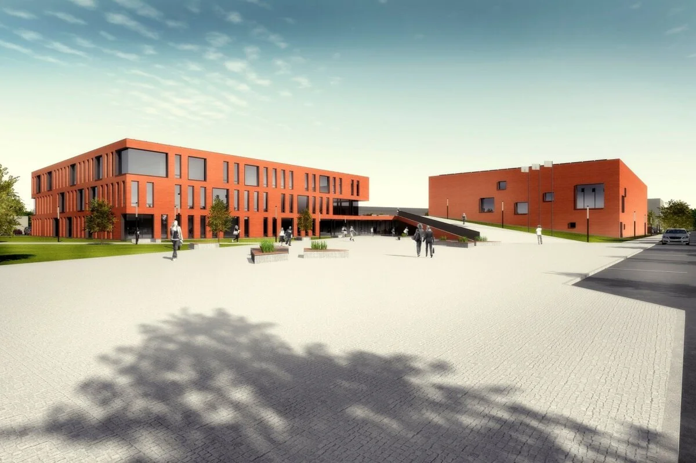 Boa arhitektide poolt valminud projekt. (NB! Algses projektist tehti hiljem mõningaid muudatusi.
Foto: BOA arhitektid (Allikas)
2020. aasta suvel korraldas Riigikinnisvara AS välja hanke Laagri Gümnaasiumi õppe- ja spordihoone ehituseks. Hanke tulemusena sai peatöövõtjaks Eventus Ehitus OÜ.
27. oktoobril 2020 sõlmis Eventus Ehtius lepingu Laagri Gümnaasiumi õppe- ja spordihoone ehituseks. Koolihoone, maksumusega ligikaudu 6 miljonit, rahastati Euroopa Regionaalarengu Fondi vahenditest. Spordihoone ehitus rahastati Saue valla vahenditest. Juba novembri esimestel päevadel algasid pea 2 aastat kestnud ehitustööd.
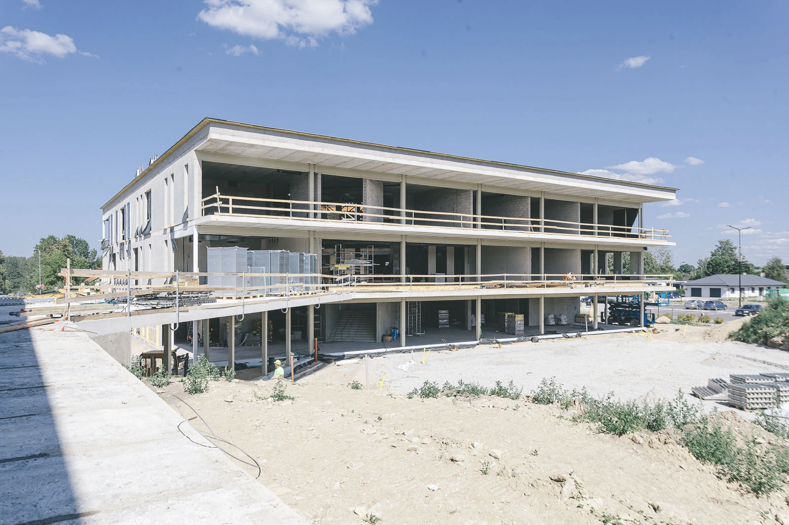 Foto koolihoone ehitusest 2021. aasta suvel
Foto: Bildex Grupp OÜ (Allikas)
2021. aasta maikuus kerkis esile järjekordne Laagri Gümnaasiumit puudutav debatt. Nimelt valmistas Saue vallavalitsus ette 27. mai volikogu istungi jaoks eelnõu, millega muudetaks Laagri Gümnaasiumi nimi Saue Riigigümnaasiumiks. See tekitas vastumeelsust nii volikogu liikmetes kui ka kohalikes inimestes. Sõltumata lahkhelidest võeti eelnõu vastu ja vallavalitsus tegi ettepaneku Haridus- ja Teadusministeeriumile teha muudatus Laagri Gümnaasiumi põhimääruses. Vaatamata kohalike petitsioonile, kinnitas Haridus- ja Teadusministeerium põhimääruse muudatuse. Määrusel vahetati pealkiri ja asendati 1. paragrahvis tekst "Laagri Gümnaasium" tekstiga "Saue Riigigümnaasium". Muudatus jõustus 13. augustil 2021.
Muudetud põhimäärus on leitav SIIT
Nimevahetusprotssesi ajal oli kooliehitus juba poole peal ja peagi toimus ka maja nurgakivi panek. Täpsemalt 9. juunil 2021 asetasid koolimaja ja spordihoone nurgakivi koolijuht Taavi Vilba, Saue vallavanem Andres Laisk, Eventus Ehitus OÜ juhatuse esimees Lauri Kaska, Riigi Kinnisvara kinnisvaraarenduskavadirektor Mihkel Mäger ja Haridus- ja Teadusministeeriumi asekantsler Robert Lippin. Nurgakivi asetati Saue Riigigümnaasiumi õppehoonet ja spordihoonet ühendava galerii alla.
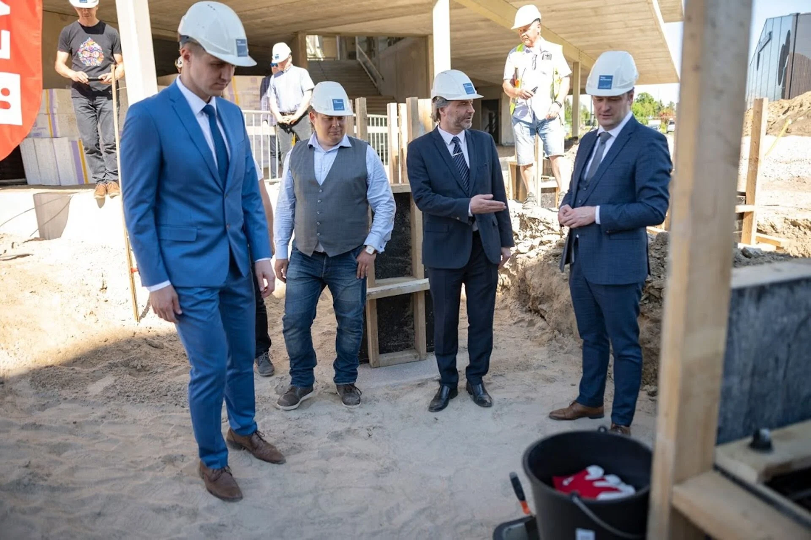 Nurgakivi panek
Foto: Tanel Murd (Allikas)
2021. aasta juunis kuulutas Riigi Kinnisvara välja kunstikonkursi taiesele, mis püstitataks uue gümnaasiumi ees asuvale haljasalale. 21. novembril 2021 avalikustati kunstikonkursi võitja, milleks oli skulptuur "Kas sa koera oskad teha?". Taies püstitati 2022. aasta juunikuus. Võidutöö autorid on Oliver Soomets ja Argo Männik.
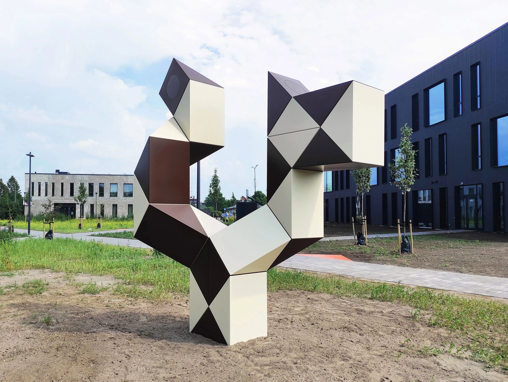 Skulptuur "Kas sa koera oskad teha?"
Foto: Oliver Soomets ja Argo Männik (Allikas)
Kooli nimedebati ja ehituse kohta saab rohkem teada vaadates intervjuud koolijuhi Taavi Vilbaga.
Intervjuu Taavi Vilbaga koolihoone ehitusest. Intervjuu on filmitud 9. juunil 2023.
Intervjueerjia: Andrus Ehrpais
Monteerija: Tauri Väli
Õppesüsteemi loomine ja meeskonna valimine
Juba paar kuud peale ehituse algust hakati valima uuele koolile juhtkonda ja looma õppesüsteemi. 2021. aasta alguses korraldati, sellel hetkel veel Laagri Gümnaasiumi nime kandva, gümnaasiumi direktori konkurss. Konkurssile kandideeris 16 inimest ja komisjoni otsus langetati peale nelja vooru. 7. aprilli kuulutati Haridusministeeriumi pressiteates välja konkurssi võitja, kelleks oli, sel hetkel veel Saku Gümnaasiumi direktori ametit pidav, Taavi Vilba.
"Ma arvan, et iga koolijuht tahab olla uue kooli loomise juures. See on hindamatu kogemus" – Taavi Vilba
Kandideerides esitasid direktori konkursil osalejad, nendehulgas ka Taavi Vilba, oma ettekujutuse kooli õppesüsteemist. Nüüd algas töö, selle ettekujutuse täide viimiseks.
21. augustil 2021 kuulutati välja Saue Riigigümnaasiumi õppejuht, kelleks valiti Oliver Hoole.
Sügisel kaasati Saue valla koolide 9. klassi õpilasi kooli loomisesse. Taavi Vilba ja Oliver Hoole külastasid erinevaid koole ja uurisid, mis on noorte huvid, ootused ja soovid seoses uue kooliga. Talvel hakati otsima kooli õpetajaid ja avalikustati Saue Riigigümnaasiumi õppekorraldusjuht, kelleks valiti Alli Salusaar.
Taavi Vilba kirjeldab esimest tööaastat uue kooli koolijuhina järgmiselt:
"Ametisse saades oli üheks esimeseks ülesandeks erineva dokumentatsiooniga töötamine. Paralleelselt sellega vajas kool õppejuhti. 2021. aasta suvel toimuski konkurss ja alustasime koos õppejuhiga ühiselt tööd septembris. Tööpäevad ja ülesanded olid meil igapäevaselt küllaltki erinevad - oli nii töötamist Tõnismäel kontoris kui ka toimetamist koolimaja peal. Õppesüsteemist oli mul pilt ees sel hetkel, kui kandideerisin SRG juhiks. Vaatamata sellele külastasime sügise ja talve jooksul väga palju koole Eestis, et tutvuda parimate praktikatega. Samal ajal tegelesime õppekava ja muude dokumentide loomise, kooli brändiga ja valmistasime ette erinevate ametikohtade konkursse. Kuna maja oli tol hetkel alles ehitamisjärgus, siis väga palju aega läks ka majaga tegelemise peale - saime mitmetes kohtades kaasa rääkida ja muutusi ellu viia. Kuna kogukond oli uue maja ootuses, siis kaasasime ka Saue valda - külastasime mitmel korral kõiki valla koole ja kaasasime kogukonda."
PILT PUUDU!Taavi Vilba uksesilt Tõnismäe kontoris
Foto: Veiko Klaan
Juba 2021. aasta detsembris algas õpetajate otsimine. Oma meenutusi õpetajaks kandideerimisest kirjeldab Saue Riigigümnaasiumi kunstiõpetaja Liis Taras.
Kuidas leidsite Saue Riigigümnaasiumi tööpakkumise?
Olin pikalt mõelnud, et tahaksin kunagi riigigümnaasiumis töötada. Olles varasemalt töötanud õpilastega 3.-12. klass, siis olin jõudnud taipamiseni, et just gümnaasiumiõpilaste ja kunstiajaloo õpetamine on see, mille suunas minu süda kiiremini põksub. Olin teelahkmel, kas lõpetada üldse õpetajakarjäär või leida töö riigigümnaasiumis. Tegin sisetunde pealt Õpetajate Lehe töökuulutuste sekstiooni lahti ja väga sobivalt paistiski sealt silma Saue Riigigümnaasiumi kunstiõpetaja töökuulutus.Milline nägi välja kandideerimine ja kas kandideerimise käigus juhtus midagi huvitavat, mida sooviksite jagada?
Kandideerimisel oli kaks võimalust: kas saata CV ja motivatsioonikiri või teha endast väike videotutvustus. Valisin viimase. Olin ikka päris pabinas, aga lootsin, et videoformaadis saadetud enesetutvustus on mõjusam kui lihtsalt CV. Sain kutse intervjuule, mille jooksul anti mõista, et olen antud ametikohale väga oodatud. Tajusin kohe, et oleme mind intervjueerinud koolijuht Taavi Vilba ja õppejuht Oliver Hoolega nö ühel lehel, seega võtsin pakkumise rõõmuga vastu.Millised nägid välja teie esimesed tööpäevad värskelt avatud koolimajas ja veidi teistsuguse õppesüsteemiga?
Esimesed tööpäevad olid täis suurt õhinat ja elevust - ootasin õpilastega kohtumist väga. Esimesest päevast alates oli energia niivõrd mõnus, et tulen siiamaani iga hommik suure entusiasmiga tööle. Õpilased on ägedad ja arukad ning tundub, et neilegi on siinne keskkond ja ruum, mille ühiselt loonud oleme, inspireeriv. Uudse õppesüsteemiga kohanemine läks ootamatult valutult ja lisaks õpetajarollile naudin ka väga mentoriks olemist.
1. märtsil 2022 algas õpilaste Saue Riigigümnaasiumi 10. klassi vastuvõtukatsetele registreerimine. Oma avalduse andsid 518 õpilast 57 erinevast koolist. 9. aprillil toimusid vastuvõtu testid. 1. juulil kinnitati 10. klassi pääsenud õpilaste nimekiri. 11. klassi ja 12. klassi õpilased tulid üle endisest Saue Gümnaasiumist, mis jätkas 2022. aastal põhikoolina. Saue Riigigümnaasiumis alustas esimesel aastal õppetööd 322 õpilast, kuid koolihoone täielik mahutavus on 540 õpilast.
Samal ajal käis ka õpetajate ja teiste koolitöötajate värbamine. 2022. aasta augustiks hakkasid ettevalmistused uueks kooliaastaks valmis saama ja koolipersonaal oli valitud. Esimesel õppeaastal oli koolipersonaal 31 liikmeline. Koolimaja sai veel viimast lihvi.
Saue Riigigümnaasium valmis 2022. aasta augusti viimastel päevadel ja avati pidulikult 31. augustil. Uue kooli lindilõikamisel olid haridus- ja teadusminister Tõnis Lukas, Saue vallavanem Andres Laisk, Riigi Kinnisvara juhatuse esimees Kati Kusmin, Eventus Ehiituse juht Lauri Kaska ja Saue Riigigümnaasiumi koolijuht Taavi Vilba.
Ligi üheksa aastat kestnud töö kooli loomise nimel naelutus 1. septembril 2022, kui Saue Riigigümnaasiumis toimus esimene kooliaasta avaaktus.
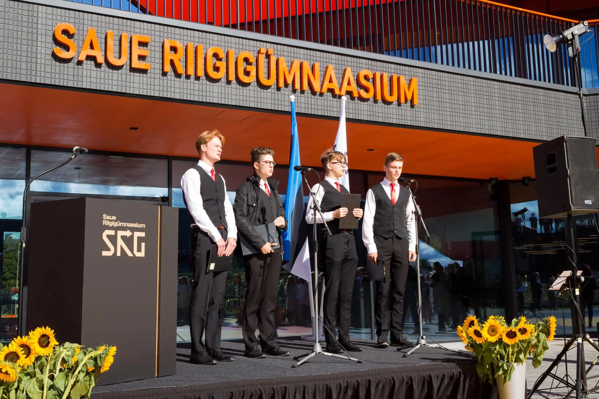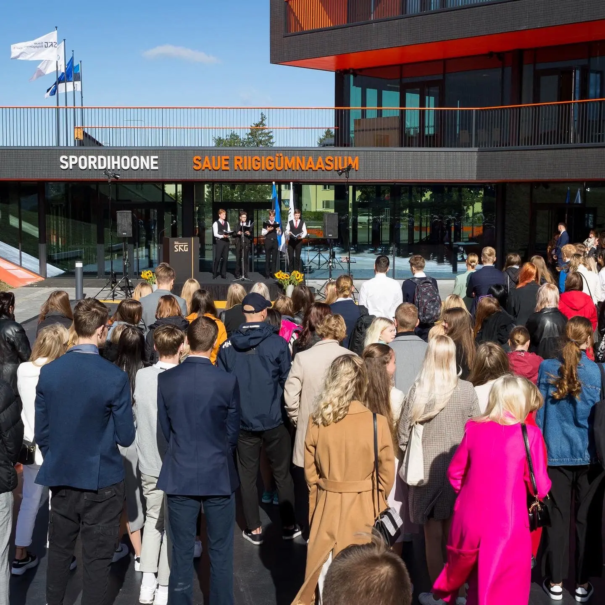 Fotod Saue Riigigümnaasiumi esimesest kooliaasta avaaktusest
Fotod: Kert Kõpper (Allikas)
2023. aasta 6. novembril tähistati Saue Riigigümnaasiumi esimest sünnipäeva!
Kooli 1. sünnipäevaks valminud video, kus Saue Riigigümnaasiumi inimesed meenutavad oma eredamaid mälestusi:
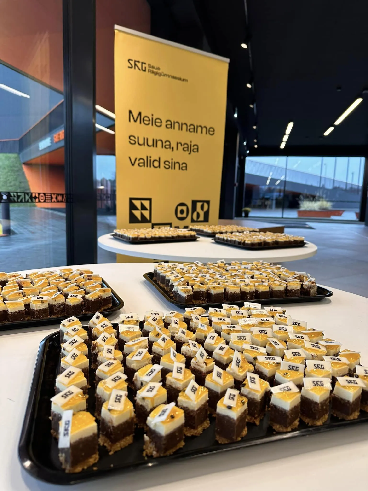 Saue Riigigümnaasiumi esimese sünnipäeva tähistamine
Allikas